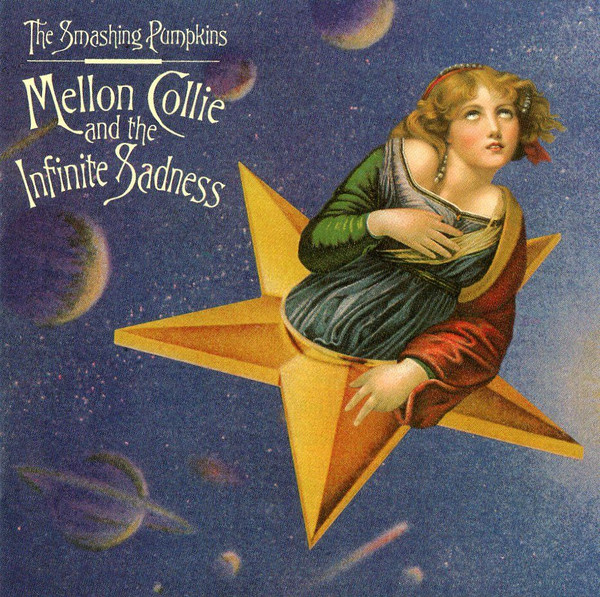

CD
Mellon Collie And The Infinite Sadness
The Smashing Pumpkins
Media: Very Good Plus (VG+) · Sleeve: Very Good Plus (VG+)
CA$23.28
Discogs SuggestedCA$30.28
Discogs MedianCA$30.28
Discogs HighCA$30.28
- Physical Copy ID
- BB-CD-2740
- Year
- 1995
- Label
- Virgin
- Catalog #
- 7243 8 40861 2 1
- Country
- USUS
- Genre / Style
- Rock · Alternative Rock